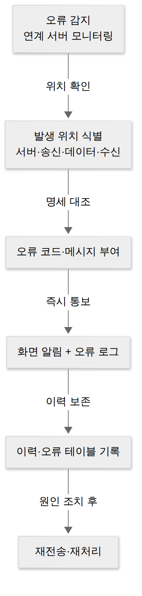

D017 · 인터페이스 상세 설계 — 송수신 방식 · 데이터 명세화 · 오류 처리방안 · 미들웨어
A4 지난 D015에서 우리는 인터페이스의 대화 상대를 정했어요. 내부냐 외부냐를 나누고, 요구사항 7항목을 적고, 아키텍처 그림에서 송신·수신·중계 시스템을 찾아 인터페이스 목록을 만들었죠. 그런데 목록만 있는 상태는 소개팅 자리만 잡아 놓고 무슨 언어로 말할지, 대화가 끊기면 어떻게 할지는 아무도 정하지 않은 상태와 같아요. 오늘 A4의 마지막 세부항목인 인터페이스 상세 설계가 그 빈칸을 채워요. ① 어떤 기술과 리듬으로 주고받을지(송수신 방식), ② 주고받는 데이터를 글자 하나까지 어떻게 맞출지(데이터 명세화), ③ 실패했을 때 누가 어떻게 알아채고 남길지(오류 처리방안), ④ 이 모든 약속을 실제로 실어 나르는 바닥 소프트웨어(미들웨어)를 차례로 봐요.
- 송수신 방식을 연계 기술 · 통신 유형(단방향/동기/비동기) · 처리 유형(실시간/지연/배치) · 발생 주기로 나눠 명세하고, 상황을 보고 동기와 비동기를 구별할 수 있다
- 인터페이스 데이터 명세화가 무엇이고(연계 정보를 정의서·레이아웃·코드 정의서로 명세), 송수신 항목 매핑과 코드 매핑이 왜 필요한지 설명할 수 있다
- 인터페이스 오류 처리방안에서 오류가 날 수 있는 네 곳(연계 서버·송신 연계 프로그램·연계 데이터·수신 연계 프로그램)과 처리 방법(화면 알림·오류 로그·관련 테이블 기록)을 설명할 수 있다
- 미들웨어의 역할과 6종(DB·RPC·MOM·TP-Monitor·ORB·WAS)을 정의와 예시로 구별할 수 있다
- D015의 인터페이스 목록이 상세 설계(방식 → 데이터 → 오류)를 거쳐 미들웨어 위에서 구현되는 흐름을 한 줄로 설명할 수 있다
1. 상세 설계 지도 — 목록 한 줄이 설계서가 되기까지
D015 끝에서 만든 인터페이스 목록에는 “주문 시스템 → 물류 시스템, 출고 요청, 실시간” 같은 한 줄짜리 항목이 쌓여 있어요. 상세 설계는 이 한 줄을 개발자가 그대로 구현할 수 있는 수준까지 풀어 쓰는 단계예요. 시험 교재에서는 이것을 “인터페이스 방법 명세화”라고 부르는데, 내·외부 시스템이 연계할 때 인터페이스별로 송·수신 방법, 송·수신 데이터, 오류 식별 및 처리 방안을 문서로 명확히 정리하는 일이라고 정의해요. 세 덩어리가 오늘 2~4장이고, 그 문서가 실제로 돌아가는 실행 환경이 5장의 미들웨어예요.
순서에 이유가 있다는 점을 기억해 두면 좋아요. 동기 방식인지 배치 방식인지가 정해져야 한 번에 몇 건을 어떤 파일 모양으로 보낼지(데이터 명세)가 정해지고, 데이터 모양이 정해져야 “길이가 넘쳤다”, “코드값이 없다” 같은 오류를 정의할 수 있어요. 앞 단계가 뒤 단계의 재료가 되는 구조라, 뒤에서부터 설계하면 오류 처리 문서가 허공에 떠 있게 돼요.
2. 송수신 방식 명세화 — 어떤 기술로, 어떤 리듬으로
지도에서 첫 칸이 송수신 방식이었죠. 인터페이스별 송·수신 방법을 명세하려면 네 가지 정보가 필요해요. 시스템 연계 기술(무슨 도구로 연결하나), 인터페이스 통신 유형(응답을 어떻게 주고받나), 인터페이스 처리 유형(한 건씩 바로냐, 모아서냐), 발생 주기(얼마나 자주)예요. 하나씩 보면 모두 현업에서 이미 고민해 본 것들인데, 시험은 이 네 칸의 이름과 소속을 정확히 묻는다는 점이 달라요.
2-1. 시스템 연계 기술
D015에서 연계 방식을 직접 연계(두 시스템이 바로 붙음)와 간접 연계(EAI·ESB 같은 중계 솔루션을 거침)로 나눴어요. 상세 설계에서는 “직접이면 구체적으로 무엇으로 붙나”를 적어요. 시험에 나오는 연계 기술은 여섯 개예요. DB Link는 DB가 제공하는 링크 객체로 수신 측 DB에서 송신 측 DB의 테이블을 직접 참조하는 방식이에요(오라클의 SELECT … FROM 테이블@링크명). DB Connection은 수신 시스템의 WAS가 송신 시스템 DB에 연결되는 커넥션 풀을 만들어 두고 프로그램이 그 풀을 써서 데이터를 가져오는 방식이고, JDBC는 자바 프로그램이 표준 드라이버로 DB에 접속하는 방식이에요. API/Open API는 송신 시스템이 데이터를 꺼낼 수 있는 인터페이스 프로그램을 열어 두고 수신 측이 그것을 호출하는 방식이에요. Hyperlink는 웹에서 링크로 상대 화면·자원으로 넘어가는 가장 가벼운 연계이고, Socket은 서버가 통신 포트를 열고 클라이언트가 접속해 바이트를 주고받는 가장 낮은 수준의 연계예요. 은행·카드사 사이의 고정 길이 전문 통신이 대표적인 소켓 연계예요.
간접 연계 쪽의 대표는 EAI(Enterprise Application Integration, 기업 내부의 이기종 애플리케이션을 하나의 통합 플랫폼으로 묶는 솔루션)와 ESB(Enterprise Service Bus, 웹 서비스 같은 개방형 표준으로 서비스 사이를 느슨하게 잇는 버스)예요. EAI의 구축 유형은 네 가지가 있어요. Point-to-Point는 미들웨어 없이 애플리케이션끼리 1:1로 잇는 방식이라 처음엔 싸지만 시스템이 늘면 선이 거미줄처럼 늘어나요. Hub & Spoke는 가운데 허브가 모든 연계를 중계하는 방식이라 관리는 편하지만 허브가 죽으면 전체가 멈춰요. Message Bus(ESB 방식)는 애플리케이션 사이에 버스를 두어 확장성이 좋고, Hybrid는 그룹 안은 허브, 그룹 사이는 버스로 섞어 써요. 거미줄이 지겨워서 허브를 만들고, 허브가 불안해서 버스를 만든 역사라고 보면 순서가 저절로 외워져요.
2-2. 통신 유형 — 응답을 어떻게 기다리나
통신 유형은 상대의 응답을 다루는 방식이에요. 단방향은 데이터를 보내기만 하고 상대 시스템의 응답이 필요 없는 업무에 써요. 로그 전송이나 알림 발송처럼 “보냈다”로 끝나는 연계예요. 동기는 거래를 요청한 시스템이 응답이 올 때까지 기다리는 방식이에요. 결과를 받아야 다음 단계로 갈 수 있는 업무, 예를 들어 결제 승인을 받아야 주문을 확정하는 경우에 써요. 고객센터에 전화를 걸고 상담원이 받을 때까지 대기음을 들으며 수화기를 귀에서 떼지 못하는 상태라고 생각하면 돼요. 비동기는 요청하는 서비스와 응답을 받아 처리하는 서비스가 분리된 구조예요. 요청을 보내 놓고 다른 일을 하다가, 처리가 끝났다는 신호(콜백·메시지)가 오면 그때 결과를 처리해요. 같은 고객센터라도 “상담원 연결되면 전화 주세요”를 누르고 끊는 콜백 예약이 비동기예요.
동기는 흐름이 단순하고 결과를 즉시 알 수 있지만, 상대가 느리면 우리 스레드도 함께 묶여서 장애가 줄줄이 번져요. 비동기는 상대가 느려도 버틸 수 있고 처리량이 높지만, “요청은 갔는데 응답이 안 오는” 경우를 따로 설계해야 해서 오류 처리(4장)가 복잡해져요. 그래서 비동기 연계는 거의 항상 5장의 MOM(메시지 지향 미들웨어)과 짝을 이뤄요.
2-3. 처리 유형과 발생 주기 — 지금 보내나, 모아서 보내나
처리 유형은 데이터를 언제, 몇 건씩 처리하나예요. 실시간은 사용자가 요청한 그 순간 한 건씩 바로 처리해요. 지연 처리는 건마다 처리하기에는 건수가 많거나 비용이 큰 경우, 요청을 쌓아 두었다가 순차적으로 조금 늦게 처리하는 방식이에요. 배치는 대용량 데이터를 정해진 시간에 한꺼번에 처리해요. 배치는 연계 스케줄러가 이벤트로 깨우거나 타이머로 깨우는데, 새벽 2시에 아무도 모르게 성실히 일하고 아침 출근 시간에 “어제 실패했습니다” 메일 한 통만 남기는 동료이기도 해요. 마지막으로 발생 주기는 매일·수시·주 1회·월말처럼 인터페이스가 얼마나 자주 일어나는지를 적는 칸이에요. 배치라면 주기가 곧 실행 일정이 되고, 실시간이라면 피크 시간 건수가 성능 요구사항의 근거가 돼요.
한 장 요약 — 송수신 방식 명세에 들어가는 네 칸을 정리하면 아래와 같아요.
| 칸 | 무엇을 정하나 | 시험에 나오는 값 |
|---|---|---|
| 연계 기술 | 무엇으로 연결하나 | DB Link · DB Connection · JDBC · API/Open API · Hyperlink · Socket (간접: EAI · ESB · 웹 서비스) |
| 통신 유형 | 응답을 어떻게 다루나 | 단방향 · 동기 · 비동기 |
| 처리 유형 | 언제, 몇 건씩 처리하나 | 실시간 · 지연 처리 · 배치 |
| 발생 주기 | 얼마나 자주 일어나나 | 매일 · 수시 · 주 1회 등 |
3. 데이터 명세화 — 글자 하나까지 맞추는 일
방식이 정해졌으니 이제 그 방식 위에 실을 데이터의 모양을 정할 차례예요. 인터페이스 데이터 명세화는 인터페이스 요구사항 분석 과정에서 식별한 연계 정보를 테이블 정의서·파일 레이아웃·코드 정의서 같은 데이터 명세로 만드는 작업이에요. 명세의 재료는 이미 다른 단계에 있어요. DB 개념 모델링에서 만든 개체(Entity) 정의서, 논리·물리 모델링에서 만든 테이블 정의서, 업무 코드값을 모은 코드 정의서를 보고, 송신 측 테이블의 어느 컬럼이 수신 측의 어느 항목으로 가는지 짝을 지어요.
왜 이렇게까지 하냐면, 사람끼리는 “날짜 보내 주세요”로 통하지만 시스템끼리는 통하지 않기 때문이에요. 송신 팀은 20261019, 수신 팀은 2026-10-19, 외주 업체는 19/10/26를 각자 당연하다고 믿는 순간 장애가 시작돼요. 그래서 항목마다 항목명, 데이터 타입, 길이, 필수 여부, 허용 코드값을 적고, 양쪽 표현이 다르면 변환 규칙까지 명세해요. 특히 코드 매핑이 중요해요. 우리 시스템은 성별을 M/F로, 상대 시스템은 1/2로 쓴다면, 매핑 없이 보낸 M은 상대 DB의 숫자 컬럼 앞에서 입장을 거부당해요.
교재는 이 작업을 인터페이스 설계 프로세스로 순서를 매겨요. 양식 준비 → 인터페이스 기본 정보 작성 → 송·수신 시스템 정보 작성 → 프로그램 명세서 확인 및 보완 → 송·수신 데이터 항목 작성 → 코드 매핑 정보 작성 → 설계 내용 검토 및 보완이에요. 결과물인 인터페이스 정의서에는 인터페이스 ID, 최대 처리 횟수, 데이터 크기(평균/최대), 시스템 정보, 데이터 정보가 들어가요. 그리고 D015에서 본 데이터 표준(공통부·개별부·종료부)은 이 명세가 실제 전문에서 어떻게 배치되는지를 정한 틀이에요. 공통부에는 인터페이스 ID·전송 일시 같은 표준 항목, 개별부에는 업무 데이터, 종료부에는 끝 표시가 들어가요.
아래는 소켓으로 보내는 고정 길이 전문 한 건과, 그 전문을 수신 측 테이블로 옮길 때의 매핑 예예요. 고정 길이 전문에서는 길이가 곧 위치라서 한 칸만 밀려도 뒤의 모든 항목이 엉뚱하게 읽혀요.
[공통부] IF-ORD-001 20261019073000 ← 인터페이스ID(10) 전송일시(14) 공백(3) [개별부] A20261019001 M 0000035000 ← 주문번호(12) 성별코드(1) 금액(10, 앞 0 채움) [종료부] @@ ← 끝 표시 수신 측 해석 결과 order_no = 'A20261019001' gender = 1 (코드 매핑 M → 1) amount = 35000
한 장 요약 — 송수신 항목 매핑표는 보통 이런 모양이에요.
| 송신 항목 (타입·길이) | 수신 항목 (타입·길이) | 변환 규칙 |
|---|---|---|
| ORD_NO (CHAR 12) | order_no (VARCHAR 20) | 그대로 복사, 필수 |
| SEX_CD (CHAR 1, M/F) | gender (NUMBER 1, 1/2) | 코드 매핑 M→1, F→2, 그 외 값은 오류 |
| ORD_AMT (CHAR 10, 앞 0) | amount (NUMBER) | 숫자 변환, 음수·공백이면 오류 |
4. 오류 처리방안 명세화 — 조용한 실패를 시끄럽게
매핑표 마지막 열에 “그 외 값은 오류”라고 적었죠. 이렇게 데이터 명세가 있어야 비로소 무엇이 오류인지가 정해져요. 오류 처리방안 명세화는 인터페이스 실행 중 생길 수 있는 오류를 식별하고, 오류마다 처리 방법을 미리 정해 문서로 남기는 일이에요. 연계에서 가장 무서운 오류는 화면이 빨갛게 터지는 오류가 아니라, 데이터가 조용히 빠졌는데 한 달 뒤 정산 금액이 안 맞아서야 발견되는 오류예요. 오류 처리 설계는 그런 조용한 실패를 시끄럽게 만드는 작업이에요.
먼저 어디서 오류가 날 수 있는지를 네 곳으로 나눠 명세해요. ① 연계 서버: 연계 서버가 실행되지 않거나 중간에 멈춰서 아예 전송이 안 되는 경우예요. ② 송신 시스템 연계 프로그램: 송신 측에서 연계 데이터를 만들거나 변환하다가 실패하는 경우, 예를 들어 DB 접근 권한이 없거나 변환 규칙이 틀린 경우예요. ③ 연계 데이터: 데이터 자체가 명세와 어긋나는 경우예요. 길이 초과, 필수값 누락, 매핑표에 없는 코드값이 여기에 들어가요. ④ 수신 시스템 연계 프로그램: 받은 데이터를 수신 DB에 반영하다가 실패하는 경우, 예를 들어 키 중복이나 수신 테이블 잠금이에요. 네 곳을 송신에서 수신으로 데이터가 흐르는 순서대로 떠올리면 빠뜨리지 않아요.
다음은 어떻게 처리할지예요. 교재의 인터페이스 오류 처리 방법은 세 가지예요. 사용자 화면에서 오류를 인지하도록 알림을 띄우는 방법(주로 실시간·동기 연계), 인터페이스 오류 로그를 생성해 상세 원인을 남기는 방법, 인터페이스 관련 테이블(이력·오류 테이블)에 오류 사항을 기록해 나중에 조회·재처리할 수 있게 하는 방법이에요. 명세서에는 오류마다 오류 코드, 오류 메시지, 오류 설명, 해결 방안을 적어 두어, 새벽에 배치가 실패해도 당직자가 문서만 보고 재전송할지 송신 측에 연락할지 판단할 수 있게 해요. 동기 연계라면 타임아웃 후 재시도 횟수를, 비동기 연계라면 실패한 메시지를 따로 모아 두는 곳(재처리 큐)도 이때 정해요.

그림처럼 오류 처리는 “감지 → 위치 → 코드 → 알림·로그 → 기록 → 재처리”로 흘러요. D015에서 중계 서버의 역할로 모니터링을 배웠는데, 그 모니터링이 바로 이 흐름의 첫 칸이에요. 간접 연계가 개발은 오래 걸려도 운영에서 사랑받는 이유가 여기에 있어요.
5. 미들웨어 — 서로 다른 시스템 사이의 통역사
지금까지 정한 방식·데이터·오류 처리는 모두 약속이에요. 그 약속을 실제로 실어 나르려면 서로 다른 운영체제·DB·프로토콜 위에서 돌아가는 프로그램들이 대화할 수 있게 해 주는 소프트웨어가 필요해요. 그게 미들웨어예요. 정의는 “분산 컴퓨팅 환경에서 서로 다른 기종의 하드웨어나 프로토콜, 통신 환경 등을 연결해 응용 프로그램과 그 운영 환경 사이에서 원만한 통신이 이루어지게 하는 소프트웨어”예요. 이름 그대로 운영체제와 응용 프로그램 가운데(middle)에 끼어 있어서, 응용 프로그램은 상대가 어떤 OS 위에 있는지 몰라도 표준화된 방식으로 말을 걸 수 있어요. 양쪽이 서로의 언어를 한 마디도 몰라도 회의가 진행되게 해 주는 동시통역사 같은 존재예요.
시험에 나오는 미들웨어는 여섯 종류예요. DB 미들웨어는 애플리케이션과 DB 사이의 통신을 원활하게 하는 미들웨어예요. 애플리케이션이 DB 제품마다 다른 접속 방식을 몰라도 표준 접속 계층으로 붙게 해 줘요(ODBC·JDBC 같은 접속 표준이 이 자리). 클라이언트-서버 구조를 지원하는 가장 기본적인 미들웨어예요. RPC(Remote Procedure Call)는 원격 서버의 프로시저를 로컬 프로시저처럼 호출하게 해 주는 미들웨어예요. 개발자는 함수를 부르듯 코드를 쓰고, 네트워크 너머로 인자를 보내고 결과를 받는 일은 RPC가 해요. 기본적으로 결과를 기다리는 동기 호출이고, 현업의 gRPC·Java RMI가 같은 계열이에요.
MOM(Message Oriented Middleware)은 메시지 기반의 비동기형 메시지 전달 미들웨어예요. 보낸 쪽은 메시지를 큐에 넣고 바로 자기 일을 하고, 받는 쪽은 준비됐을 때 꺼내 처리해요. 즉시 응답이 필요한 온라인 업무보다는 이기종 분산 시스템 사이의 데이터 동기화에 많이 써요. 교재 예시는 MQ Series·JMQ 같은 메시지 큐이고, 현업의 Kafka·RabbitMQ도 같은 자리예요. 2장의 비동기 통신을 실제로 구현하는 주인공이죠. 출제자는 MOM 설명에 “동기식”이라는 단어를 슬쩍 붙여 놓고 수험생이 그냥 지나치기를 기다려요.
TP-Monitor(Transaction Processing Monitor)는 항공기·철도 예약처럼 수많은 사용자가 동시에 접속하는 온라인 트랜잭션 업무에서 트랜잭션을 처리하고 감시하는 미들웨어예요. 사용자가 늘어도 빠른 응답 속도를 유지하도록 요청을 나누고, 분산 환경의 트랜잭션이 끝까지 완료되거나 함께 취소되도록 관리해요. 교재 예시는 Tuxedo·Tmax예요. ORB(Object Request Broker)는 CORBA 표준 스펙을 구현한 객체지향 미들웨어예요. 네트워크 너머의 객체를 마치 내 프로세스 안의 객체처럼 찾아서 메서드를 호출하게 해 줘요. RPC가 “원격 함수”라면 ORB는 “원격 객체”라고 구별하면 돼요. 최근에는 TP-Monitor의 장점인 트랜잭션 처리·모니터링을 덧붙인 제품도 있어요. 현업에서 CORBA라는 이름을 들은 기억이 가물가물하다면 정상이에요. 시험장에서는 아직 현역이거든요.
WAS(Web Application Server)는 정적 콘텐츠(HTML·이미지)만 내주는 웹 서버와 달리, 사용자 요청에 따라 동적 콘텐츠를 만들어 내는 미들웨어예요. HTTP 세션을 관리하고, 트랜잭션·보안·DB 커넥션 풀 같은 실행 환경을 제공하고, 다른 이기종 시스템과의 연동도 지원해요. Tomcat·WebLogic·WebSphere·JEUS가 예시예요. 흐름은 브라우저 → 웹 서버 → (동적 처리가 필요하면) WAS → DB → WAS → 웹 서버 → 브라우저예요. 2장의 DB Connection 연계에서 “수신 측 WAS가 송신 DB 커넥션 풀을 만든다”고 했던 그 WAS가 바로 이 미들웨어예요.
한 장 요약 — 여섯 미들웨어를 구별하는 핵심어와 예시예요.
| 미들웨어 | 구별 핵심어 | 예시 |
|---|---|---|
| DB 미들웨어 | 애플리케이션 ↔ DB 통신, C/S 구조의 기본 | ODBC · JDBC 같은 접속 표준 |
| RPC | 원격 프로시저를 로컬처럼 호출 | gRPC · Java RMI 계열 |
| MOM | 메시지 기반 비동기, 이기종 분산 데이터 동기화 | MQ Series · JMQ · Kafka · RabbitMQ |
| TP-Monitor | 온라인 트랜잭션 처리·감시, 빠른 응답 유지 | Tuxedo · Tmax |
| ORB | CORBA 표준의 객체지향 미들웨어 | Orbix 등 CORBA 구현체 |
| WAS | 동적 콘텐츠 처리, HTTP 세션 | Tomcat · WebLogic · JEUS |
6. 시험 포인트
오늘 내용을 시험 쪽에서 다시 보면, A4 상세 설계 문제는 대부분 설명을 주고 이름을 고르게 해요. 특히 미들웨어 6종 구별, 동기·비동기·단방향 구별, 오류 발생 위치 네 곳이 단골이에요. D015의 직접·간접 연계 장단점, 공개종과 함께 묶어서 한 번에 정리해 두세요. 이름 여섯 개에 설명 여섯 줄이면 출제자 입장에서는 보기 네 개를 뽑는 데 1분도 안 걸리는 단원이라, 짝만 정확하면 가장 싸게 점수를 사는 곳이기도 해요.
- 인터페이스 방법 명세화 = 송·수신 방법 · 송·수신 데이터 · 오류 식별 및 처리 방안을 문서로 정리
- 송수신 방법 명세에 필요한 정보 = 연계 기술 · 통신 유형 · 처리 유형 · 발생 주기
- 동기 = 응답까지 대기 / 비동기 = 요청과 응답 처리 서비스 분리 / 단방향 = 응답 불필요
- 실시간 = 즉시 한 건 / 지연 처리 = 건수·비용이 커서 쌓았다가 순차 / 배치 = 대용량을 정해진 시간에
- 데이터 명세화 = 연계 정보를 테이블 정의서·파일 레이아웃·코드 정의서로, 핵심은 송수신 항목과 코드 매핑
- 오류 위치 = 연계 서버 · 송신 연계 프로그램 · 연계 데이터 · 수신 연계 프로그램 / 처리 = 화면 알림 · 오류 로그 · 관련 테이블 기록
- 미들웨어 6종: MOM 비동기, RPC 로컬처럼, TP-Monitor 온라인 트랜잭션 감시, ORB CORBA, WAS 동적 콘텐츠, DB 미들웨어 DB 접속
- EAI 유형 = Point-to-Point · Hub & Spoke · Message Bus · Hybrid
7. 오답 복습 — D007-2 유연성, 일주일 만에 다시
오늘은 D007-2를 처음 틀린 지 7일째 되는 날이에요(10/13 D+1 재확인은 통과). 그때 고른 답은 직관성, 정답은 유연성이었어요. 인터페이스 이야기와도 사실 이어져요. 오늘 배운 시스템 인터페이스가 “서로 다른 시스템이 만나는 규칙”이라면, UI는 “사람과 시스템이 만나는 규칙”이고, UI 설계 원칙은 그 규칙이 지켜야 할 품질이에요.
네 원칙을 다시 짚어 볼게요. 직관성은 누구나 쉽게 이해하고 쓸 수 있어야 한다는 원칙이에요(처음 봐도 무엇을 누를지 안다). 유효성은 사용자의 목적을 정확하고 완전하게 달성해야 한다는 원칙이에요(원하는 결과가 제대로 나온다). 학습성은 누구나 쉽게 배우고 익힐 수 있어야 한다는 원칙이에요. 유연성은 사용자의 요구를 최대한 수용하고 실수를 최소화해야 한다는 원칙이에요 — 여러 조작 방식을 받아 주고, 잘못 눌러도 되돌릴 수 있고, 실수하기 전에 막아 줘요. 직관성이 “처음 보고 바로 아는가”를 묻는다면, 유연성은 “사람마다 다르게 쓰거나 실수해도 받아 주는가”를 물어요. 상황 문제에서 여러 입력 방식, 되돌리기·취소, 실수 방지가 보이면 유연성이에요. 직관성이 “첫눈에 반하게 하는 화면”이라면, 유연성은 “잘못 눌러도 화내지 않고 다시 기회를 주는 화면”이에요.
확인 문제 (채점 완료 · 3/3)
- 증권사 주문 시스템은 장 시작 직후 수만 개의 단말에서 동시에 들어오는 매수·매도 주문을 처리해야 해요. 주문 하나하나가 끝까지 완료되거나 함께 취소되도록 트랜잭션을 처리·감시하고, 사용자 수가 급증해도 빠른 응답 속도를 유지하도록 돕는 미들웨어를 도입했어요. 이 미들웨어는?
정답·해설
③ TP-Monitor. 수많은 사용자의 온라인 트랜잭션을 처리·감시하고 사용자가 몰려도 응답 속도를 지켜 줘요(항공·철도 예약, Tuxedo·Tmax). MOM은 메시지 기반 비동기 전달, ORB는 CORBA 객체 통신, DB 미들웨어는 DB 접속 연결이에요. - 쇼핑몰 주문 서비스가 배송사에 출고를 요청한 뒤 응답을 기다리지 않고 다음 주문 처리를 계속해요. 배송사가 출고 접수를 마치면 완료 신호를 보내고, 주문 서비스와는 별도인 결과 처리 서비스가 그 신호를 받아 주문 상태를 바꿔요. 이 인터페이스 통신 유형은?
정답·해설
③ 비동기. 요청하고 기다리지 않고, 완료 신호를 따로 받아 처리해요. 동기는 응답이 올 때까지 대기, 단방향은 응답이 필요 없는 경우, 배치는 통신 유형이 아니라 처리 유형이에요. - 무인 주문 키오스크를 개편했어요. 터치 화면뿐 아니라 실물 버튼과 음성 안내로도 메뉴를 고를 수 있게 했고, 결제 직전 화면에서 담은 메뉴를 다시 보여 주며 “이전 단계로” 버튼으로 잘못 담은 메뉴를 뺄 수 있게 했어요. 이 개편이 주로 따른 UI 설계 원칙은?
정답·해설 (D007-2 재확인 통과)
③ 유연성. 다양한 조작 방식(터치·버튼·음성)을 받아들이고, 실수를 되돌릴 수 있게 하는 게 유연성이에요. 직관성은 처음 봐도 바로 아는 것, 유효성은 목적 달성, 학습성은 쉽게 배우는 거예요.
고른 뒤 답안 복사 → 디스코드 공부 채널에 붙여넣기 하면 돼요.
답장: 정처기 D017: 1)번호 2)번호 3)번호